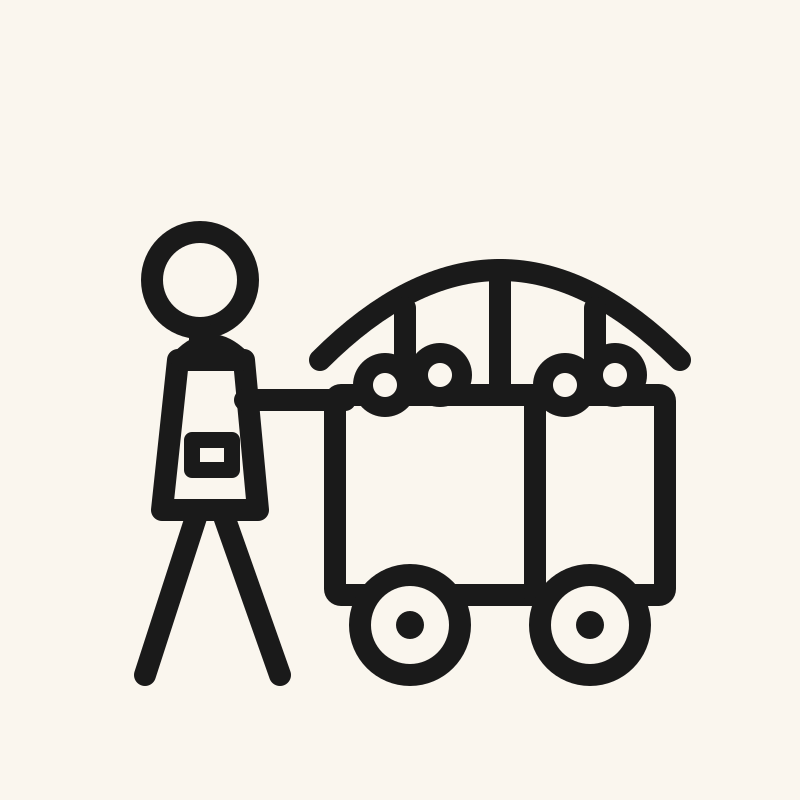
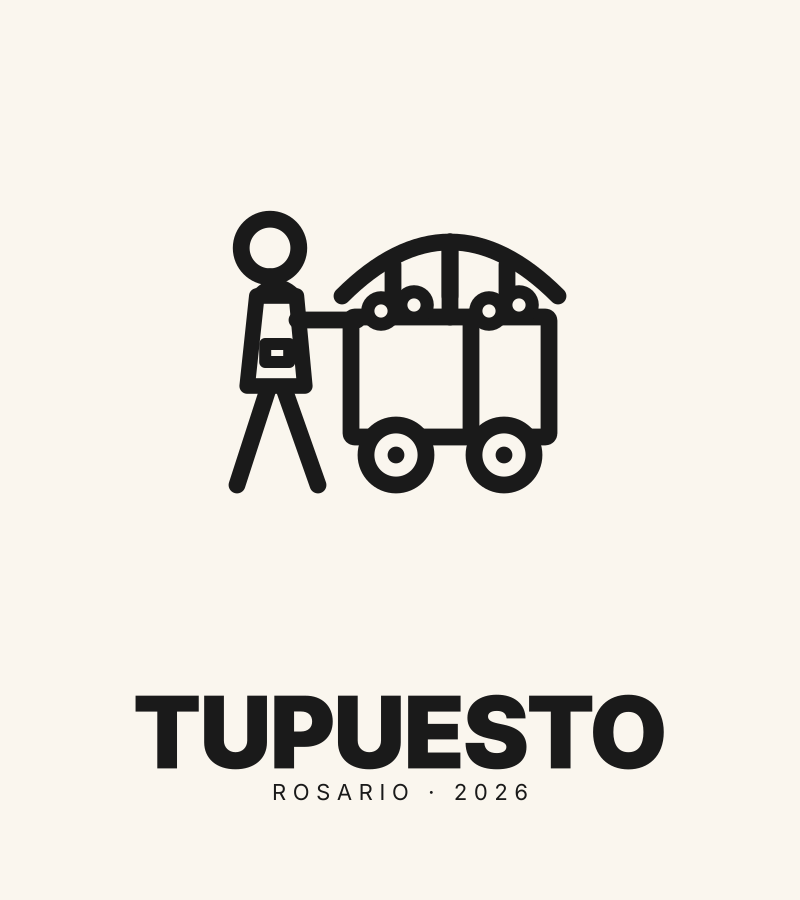
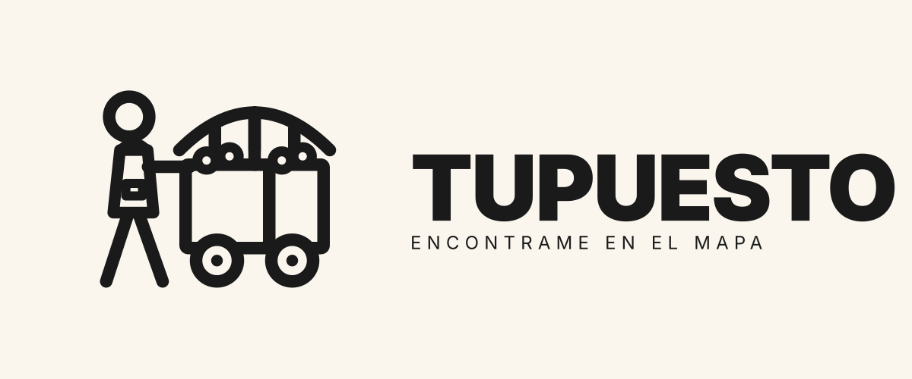
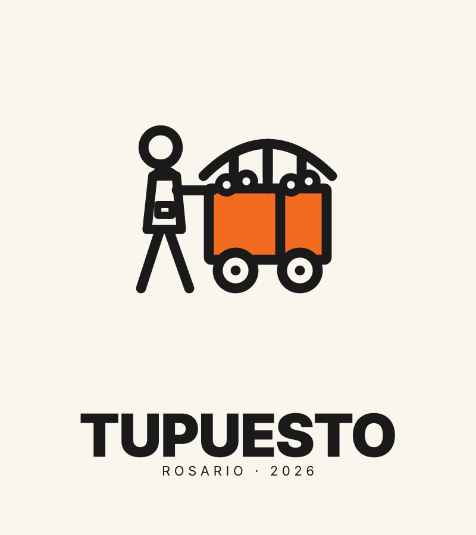
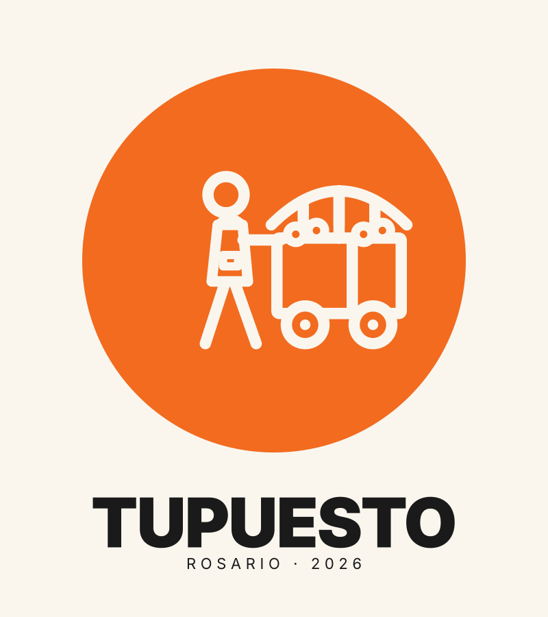
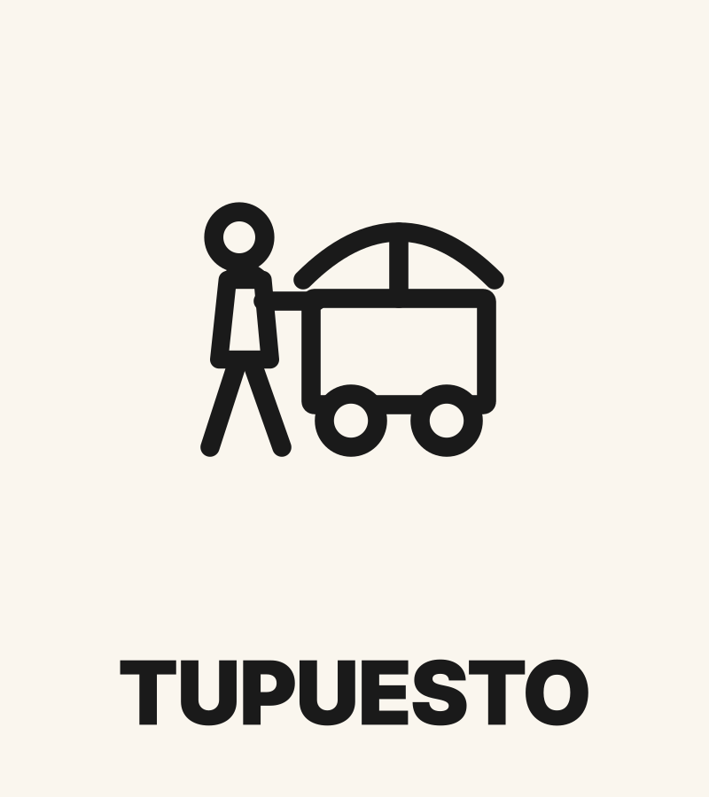
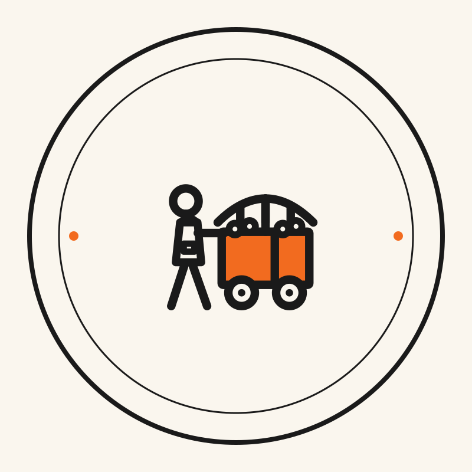

8 logos pictográficos · rosario · 2026
Iteración 2: reorientamos hacia un pictograma de persona empujando carrito como símbolo unificado. Más concreto, más legible, identificable inmediatamente por vendedores y clientes. Las 8 variantes comparten el mismo símbolo base con variaciones de aplicación (color, marco, composición, complejidad).
Cada logo es un archivo SVG editable. Podés abrirlos en Figma, Illustrator o Inkscape (gratis) para modificar cualquier detalle. Las tipografías son Inter (Google Fonts) — los SVG cargan la fuente automáticamente si tenés conexión.
Paleta: Naranja TuPuesto #F26B1F · Charcoal #1A1A1A · Cream #FAF6EE.

Solo el símbolo, sin texto. Stroke charcoal sobre cream. Para uso compacto.

Símbolo arriba, texto debajo. Composición clásica equilibrada.

Símbolo izquierda, texto derecha. Header-friendly, firma de email.

Carrito en naranja sólido + persona en charcoal stroke. Identidad visual reforzada — "esto es TuPuesto" en 1 vistazo.

El símbolo dentro de un círculo naranja sólido. Perfecto para avatar/badge.
Formato app icon listo: cuadrado redondeado naranja, pictograma cream. iOS/Android/PWA ready.

Versión simplificada — sin productos ni franjas. Escala perfecto hasta favicon 16x16.

Sello con texto "TUPUESTO · ROSARIO" rodeando el pictograma. Ceremonial.
El #04 — Pictograma con color (carrito naranja) es la apuesta más fuerte como logo primario: mantiene el pictograma claro pero suma identidad de marca con el naranja TuPuesto en el carrito. Es lo más memorable y lo más fácilmente reconocible una vez que la gente lo vea 2-3 veces.
El #06 — App Icon es el complemento natural — formato cuadrado naranja para iOS/Android/PWA. Las dos versiones (logo grande #04 + app icon #06) cubren el 95% de casos de uso.
El #08 — Badge circular queda como variante ceremonial para el día D y press kit, no para uso cotidiano.